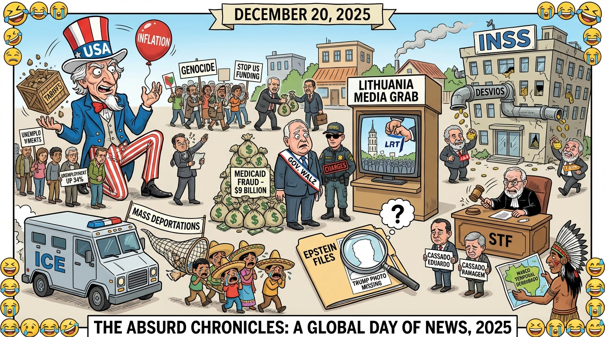

The Daily Globe: Minnesota Medicaid Fraud Scandal, Immigration and Deportations (ICE Raids and Mass Expulsions), and Escândalo do INSS (Fraudes em Aposentadorias)
Published on 2025-12-20

World
- Minnesota Medicaid Fraud Scandal
Federal charges against more individuals in what prosecutors called “industrial-scale fraud” potentially exceeding $9 billion since 2018. Critics targeted Gov. Tim Walz for lax oversight, fueling calls for resignations.
- Protests in Lithuania Against Government Media Control
Thousands protested in Vilnius against pro-EU reforms that critics said would allow the government to seize control of public broadcaster LRT, sparking debates on media independence.
- Epstein Files and Trump Controversy
Renewed outrage over Jeffrey Epstein's files, with claims that photos of Donald Trump were removed while others remained, tying into broader U.S. political scandals.
- Irish Protests Against Mercosur Trade Deal
Farmers and rural communities rallied against the EU-Mercosur trade agreement, seen as a threat to Irish agriculture through cheap imports.
- Pro-Palestine Hunger Strikes and Solidarity Protests
Global solidarity actions, including protests in Glasgow, Scotland, for Palestinian hunger strikers held in UK custody.
USA
- Immigration and Deportations (ICE Raids and Mass Expulsions)
Widespread criticism of aggressive ICE operations, citizenship revocations, and deportations targeting Mexicans and other groups linked to racism and economic strain.
- Economic Policies and Hardships (Tariffs, Inflation, Unemployment)
Frustration over Trump's tariffs, rising costs, layoffs, and unfulfilled promises; Black Americans' unemployment highlighted as up 34%.
- U.S. Foreign Policy and Israel/Palestine (Genocide Accusations and U.S. Funding)
Outrage over U.S. support for Israel, accused of funding 'genocide' in Palestine, linked to Zionism critiques.
- Domestic Social Issues (Racism, Mass Shootings, and Gun Violence)
Discussions on rising racism, racial profiling, mass shootings, and gun access, connected to mental health crises.
Brazil
- Escândalo do INSS (Fraudes em Aposentadorias)
Acusações de desvios bilionários em aposentadorias envolvendo figuras ligadas ao governo Lula, incluindo familiares do presidente.
- Ações Judiciais contra Bolsonaristas
Cassações de mandatos de Eduardo Bolsonaro e Alexandre Ramagem, buscas em deputados do PL por desvios.
- Decisões do STF e Marco Temporal
STF derrubou marco temporal para demarcação de terras indígenas; polêmica com contratos da esposa de ministro.
- Economia e Políticas do Governo Lula
Críticas a aumento de impostos, inflação, dívida pública e gastos excessivos no governo Lula.
- Violência Social e Intolerância
Aumento de feminicídios, intolerância religiosa, LGBTfobia, racismo e conservadorismo na sociedade brasileira.
Topic Index
- World: Minnesota Medicaid Fraud Scandal — Federal charges against more individuals in what prosecutors called “industrial-scale fraud” potentially exceeding $9 billion since 2018
- World: Protests in Lithuania Against Government Media Control — Thousands protested in Vilnius against pro-EU reforms that critics said would allow the government to seize control of public broadcaster LRT, sparking debates on media independence
- World: Epstein Files and Trump Controversy — Renewed outrage over Jeffrey Epstein's files, with claims that photos of Donald Trump were removed while others remained, tying into broader U
- World: Irish Protests Against Mercosur Trade Deal — Farmers and rural communities rallied against the EU-Mercosur trade agreement, seen as a threat to Irish agriculture through cheap imports
- World: Pro-Palestine Hunger Strikes and Solidarity Protests — Global solidarity actions, including protests in Glasgow, Scotland, for Palestinian hunger strikers held in UK custody
- USA: Immigration and Deportations (ICE Raids and Mass Expulsions) — Widespread criticism of aggressive ICE operations, citizenship revocations, and deportations targeting Mexicans and other groups linked to racism and economic strain
- USA: Economic Policies and Hardships (Tariffs, Inflation, Unemployment) — Frustration over Trump's tariffs, rising costs, layoffs, and unfulfilled promises; Black Americans' unemployment highlighted as up 34%
- USA: U.S. Foreign Policy and Israel/Palestine (Genocide Accusations and U.S. Funding) — Outrage over U